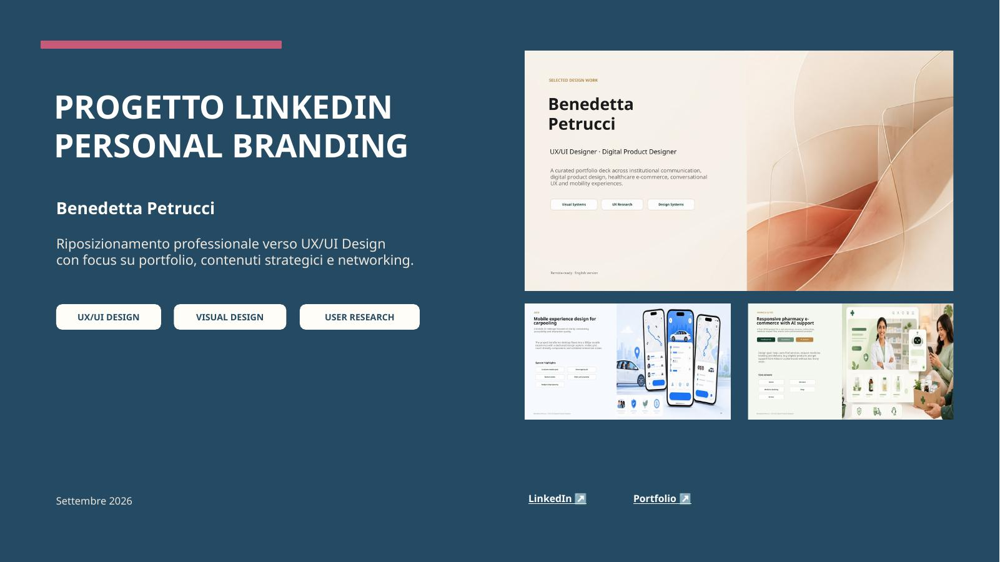
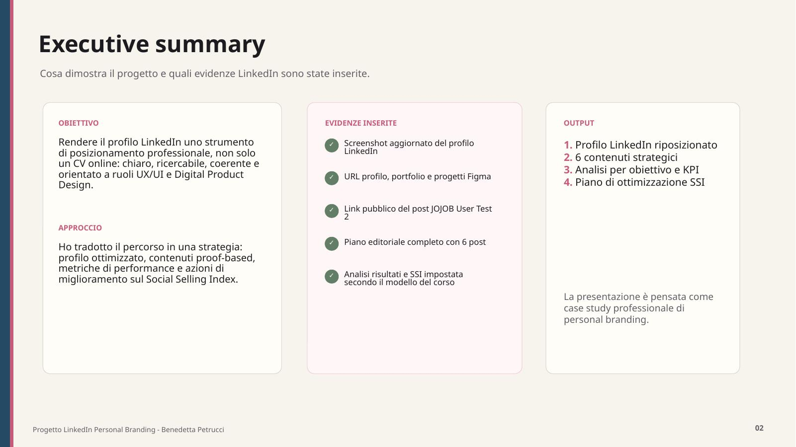
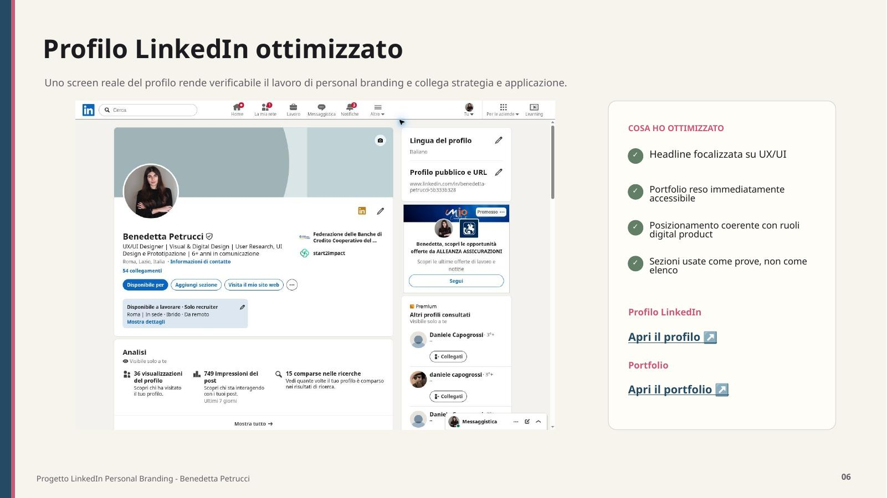
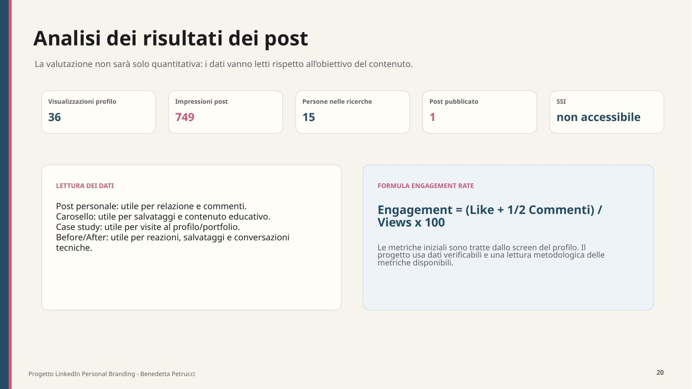

Pubblico
Professionisti e team che cercano competenze UX/UI, visual design e capacità di comunicare decisioni complesse.
Case study · Personal branding
Un progetto che collega strategia, profilo, contenuti, networking e KPI per rendere chiaro il mio percorso verso UX/UI e Digital Product Design.

01 · Contesto
La sfida era riposizionare il profilo LinkedIn verso UX/UI Design senza cancellare il valore di oltre sei anni nella comunicazione. Il progetto trasforma il background in un elemento distintivo e collega ogni affermazione a progetti, contenuti o risultati verificabili.

02 · Strategia
Ho definito recruiter, Talent Acquisition, UX/UI Lead, Product Designer e hiring manager come pubblico prioritario. Il posizionamento mette UX/UI al centro e utilizza comunicazione, visual design e project work come differenziatori concreti.
Professionisti e team che cercano competenze UX/UI, visual design e capacità di comunicare decisioni complesse.
Aumentare visibilità e credibilità attraverso progetti, metodo e risultati verificabili.
Trasformare contenuti e flussi complessi in esperienze digitali più chiare, coerenti e usabili.
User Research, User Testing, UI Design, prototipazione, Design System e accessibilità.
03 · Profilo LinkedIn
Foto e cover creano una prima impressione coerente; headline e Informazioni chiariscono ruolo e valore; la sezione In primo piano porta i progetti prima dei certificati; esperienze e competenze sostengono il posizionamento con parole chiave pertinenti.

04 · Content strategy
Il piano editoriale è organizzato intorno a UX Process & Research, UI & Product Design e Career & Design Thinking. Ogni contenuto ha formato, motivazione, CTA e KPI coerenti con la funzione che deve svolgere.
JOJOB User Test 2 e due insight trasformati in decisioni di design.
Farmacia Altesi e before/after UI per rendere visibile il ragionamento progettuale.
Il passaggio dalla comunicazione alla UX e una riflessione sul rapporto tra estetica e chiarezza.
Il protocollo completa il piano: interazione mirata prima della pubblicazione, risposta ragionata ai commenti, analisi dopo 24 ore e follow-up con relazioni pertinenti.
05 · Risultati
I dati disponibili sono stati riportati senza stime: il progetto distingue i risultati effettivamente osservati dai KPI futuri del piano editoriale.
Il Social Selling Index non era accessibile al momento della rilevazione: invece di inserire un valore stimato, ho utilizzato le sue quattro aree come framework per un piano di miglioramento concreto.

06 · Riconoscimento
Il risultato è un sistema professionale coerente: profilo riposizionato, sei contenuti strategici, obiettivi misurabili e un piano di networking e ottimizzazione da applicare nel tempo.